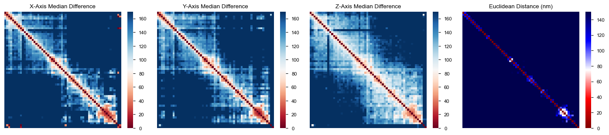
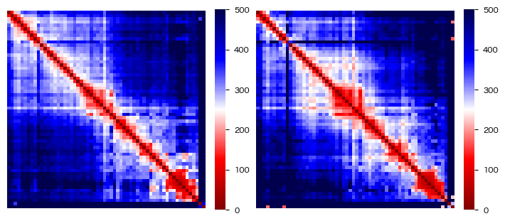
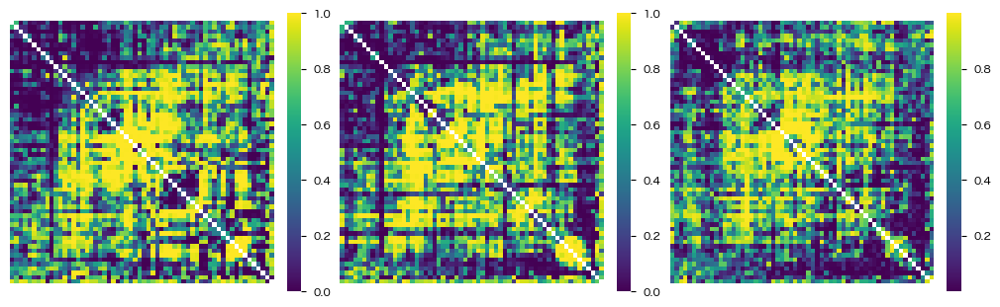
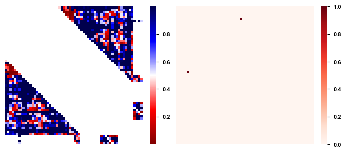
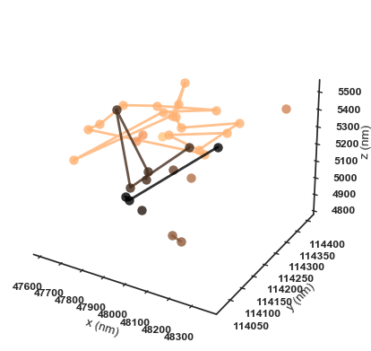
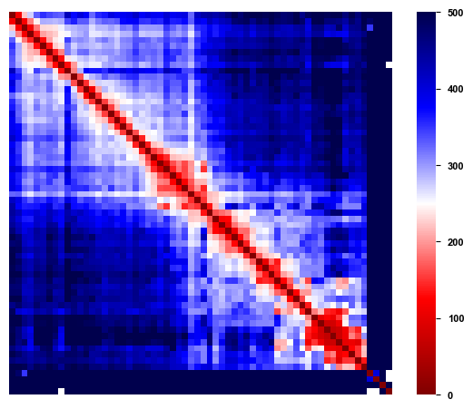
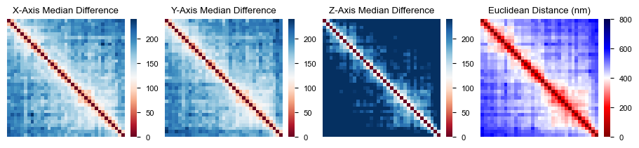

[33]:
import os
import importlib
import numpy as np
import pandas as pd
from matplotlib import pyplot as plt
import seaborn as sns
import snapfish2 as sf
from utils.data import DataTree
dtree = DataTree("../data")
importlib.reload(sf)
[33]:
<module 'snapfish2' from '/Users/redfishhh/Documents/research/MultiplexedFISH/SnapFISH2/snapfish2/__init__.py'>
[14]:
%reload_ext autoreload
%autoreload 2
[3]:
dtree["murphy_ng_2024"].keys()
[3]:
dict_keys(['diff', 'dTAG', 'control', 'control2i', 'brain'])
[34]:
loader1 = sf.pp.FOF_CT_Loader({rep: dtree["murphy_ng_2024","dTAG",rep,"trace"]
for rep in ["rep1", "rep2"]})
adata1 = loader1.create_adata("chr6")[:,:60]
loader2 = sf.pp.FOF_CT_Loader({rep: dtree["murphy_ng_2024","control",rep,"trace"]
for rep in ["rep1", "rep2"]})
adata2 = loader2.create_adata("chr6")[:,:60]
# loader3 = sf.pp.FOF_CT_Loader({rep: dtree["murphy_ng_2024","control2i",rep,"trace"]
# for rep in ["rep1", "rep2"]})
# c = ["Spot_ID", "X", "Y", "Z", "Chrom", "Chrom_Start", "Chrom_End", "Trace_ID"]
# for k, v in loader3.info.items():
# v["columns"] = c
# adata3 = loader3.create_adata("chr6")
adata1
[34]:
View of AnnData object with n_obs × n_vars = 1614 × 60
var: 'Chrom_Start', 'Chrom_End'
uns: 'Chrom'
layers: 'X', 'Y', 'Z'
[35]:
sf.pp.axis_weight(adata1, False)
Axis X sd: 19296.968
Axis Y sd: 19086.117
Axis Z sd: 596.213
[35]:
array([9.52767173e-04, 9.73934580e-04, 9.98073298e-01])
[85]:
d1d = adata3.var["Chrom_Start"].values
[88]:
d1d
[88]:
array([52090001, 52095001, 52100001, 52105001, 52110001, 52115001,
52120001, 52125001, 52130001, 52135001, 52140001, 52145001,
52150001, 52155001, 52160001, 52165001, 52170001, 52175001,
52180001, 52185001, 52190001, 52195001, 52200001, 52205001,
52210001, 52215001, 52220001, 52225001, 52230001, 52235001,
52240001, 52245001, 52250001, 52255001, 52260001, 52265001,
52270001, 52275001, 52280001, 52285001, 52290001, 52295001,
52300001, 52305001, 52310001, 52315001, 52320001, 52325001,
52330001, 52335001, 52340001, 52345001])
[86]:
d1d[1:] - d1d[:-1]
[86]:
array([5000, 5000, 5000, 5000, 5000, 5000, 5000, 5000, 5000, 5000, 5000,
5000, 5000, 5000, 5000, 5000, 5000, 5000, 5000, 5000, 5000, 5000,
5000, 5000, 5000, 5000, 5000, 5000, 5000, 5000, 5000, 5000, 5000,
5000, 5000, 5000, 5000, 5000, 5000, 5000, 5000, 5000, 5000, 5000,
5000, 5000, 5000, 5000, 5000, 5000, 5000])
[12]:
from utils.maps import dist_diff_heatmaps
fig, axes = plt.subplots(1, 4, figsize=(14, 3))
dist_diff_heatmaps(axes, adata1, vmax1=170)

[ ]:
sf.pp.filter_normalize(adata1)
caller = sf.tl.TADCaller(window=3e4, tree=False)
res = caller.call_tads(adata1)
bedpe = caller.to_bedpe(res)
/Users/redfishhh/Documents/research/MultiplexedFISH/LoopTests/snapfish2/utils/eval.py:22: ImplicitModificationWarning: Setting element `.varp['raw_var_X']` of view, initializing view as actual.
adata.varp[f"raw_var_{v}"] = med_sq[i]
[ ]:
bedpe
| c1 | s1 | e1 | c2 | s2 | e2 | stat1 | stat2 | level | idx1 | idx2 | |
|---|---|---|---|---|---|---|---|---|---|---|---|
| 0 | chr6 | 52090001 | 52095001 | chr6 | 52240001 | 52245001 | NaN | 3.156481e+13 | 0 | 0 | 30 |
| 1 | chr6 | 52240001 | 52245001 | chr6 | 52285001 | 52290001 | 3.156481e+13 | 1.555987e+13 | 0 | 30 | 39 |
| 2 | chr6 | 52285001 | 52290001 | chr6 | 52300001 | 52305001 | 1.555987e+13 | 5.976212e+06 | 0 | 39 | 42 |
| 3 | chr6 | 52300001 | 52305001 | chr6 | 52320001 | 52325001 | 5.976212e+06 | 5.160532e+14 | 0 | 42 | 46 |
| 4 | chr6 | 52320001 | 52325001 | chr6 | 52740001 | 52745001 | 5.160532e+14 | NaN | 0 | 46 | 59 |
[48]:
med_dist1 = sf.pp.median_pdist(adata1, inplace=False)
med_dist2 = sf.pp.median_pdist(adata2, inplace=False)
fig, axes = plt.subplots(1, 2, figsize=(7,3))
sf.pl.pairwise_heatmap(med_dist1, vmax=500, ax=axes[0])
sf.pl.pairwise_heatmap(med_dist2, vmax=500, ax=axes[1])

[50]:
sf.pp.filter_normalize(adata1)
sf.pp.filter_normalize(adata2)
diff = sf.tl.DiffLoop(adata1, adata2)
pvals = diff.entry_pvals(adata1, adata2)
fig, axes = plt.subplots(1, 3, figsize=(10, 3))
for a, b in zip(axes, pvals):
sf.pl.pairwise_heatmap(b, ax=a, cmap="viridis")

[53]:
from anndata import concat
sf.pp.axis_weight(concat([adata1, adata2]), inplace=False)
/opt/miniconda3/lib/python3.12/site-packages/anndata/_core/anndata.py:1818: UserWarning: Observation names are not unique. To make them unique, call `.obs_names_make_unique`.
utils.warn_names_duplicates("obs")
[53]:
array([8.84506549e-04, 1.01857784e-03, 9.98096916e-01])
[24]:
caller = sf.tl.LoopCaller(1e-4, cut_lo=5e3, gap=1e4, outer_cut=5e4)
res = caller.call_loops(adata)
df = caller.to_bedpe(res, adata)
fig, axes = plt.subplots(1, 2, figsize=(7, 3))
sf.pl.pairwise_heatmap(res["fdr"], ax=axes[0])
sf.pl.pairwise_heatmap(res["summit"], ax=axes[1], cmap="Reds")
df[df["summit"]]
[24]:
| c1 | s1 | e1 | c2 | s2 | e2 | stat | pval | fdr | candidate | label | summit | |
|---|---|---|---|---|---|---|---|---|---|---|---|---|
| 318 | chr6 | 52115001 | 52120001 | chr6 | 52235001 | 52240001 | 1.323355e+11 | 2.405187e-12 | 1.532104e-09 | True | 1.0 | True |

[ ]:
sf.pl.background_model(10, 10, )
[ ]:
from matplotlib.colors import Colormap
<matplotlib.cm.ColormapRegistry at 0x12fec0e90>
[137]:
cmap = plt.get_cmap("copper_r")
X = np.stack([adata[4].layers[c][0] for c in ["X", "Y", "Z"]])
segments = []
na_flag = True
for i, x in enumerate(X.T):
if np.all(~np.isnan(x)):
if na_flag:
segments.append([x])
else:
segments[-1].append(x)
na_flag = False
else:
na_flag = True
segments = [np.array(t).reshape(-1, 3).T for t in segments]
colors = cmap(np.linspace(0, cmap.N, len(segments)).astype("int"))
fig = plt.figure(figsize=(4, 4))
ax = fig.add_subplot(projection="3d")
for segment, c in zip(segments, colors):
ax.plot(*segment, ".-", markersize=15, linewidth=2, alpha=0.8, color=c)
ax.grid(False)
ax.xaxis.set_pane_color((0.0,0.0,0.0,0.0))
ax.yaxis.set_pane_color((0.0,0.0,0.0,0.0))
ax.zaxis.set_pane_color((0.0,0.0,0.0,0.0))
ax.set(xlabel="x (nm)", ylabel="y (nm)", zlabel="z (nm)")
[137]:
[Text(0.5, 0, 'x (nm)'), Text(0.5, 0.5, 'y (nm)'), Text(0.5, 0, 'z (nm)')]

[115]:
plt.colormaps
[115]:
<matplotlib.cm.ColormapRegistry at 0x12fec0e90>
[119]:
import scanpy as sc
[123]:
plt.style.available
[123]:
['Solarize_Light2',
'_classic_test_patch',
'_mpl-gallery',
'_mpl-gallery-nogrid',
'bmh',
'classic',
'dark_background',
'fast',
'fivethirtyeight',
'ggplot',
'grayscale',
'seaborn-v0_8',
'seaborn-v0_8-bright',
'seaborn-v0_8-colorblind',
'seaborn-v0_8-dark',
'seaborn-v0_8-dark-palette',
'seaborn-v0_8-darkgrid',
'seaborn-v0_8-deep',
'seaborn-v0_8-muted',
'seaborn-v0_8-notebook',
'seaborn-v0_8-paper',
'seaborn-v0_8-pastel',
'seaborn-v0_8-poster',
'seaborn-v0_8-talk',
'seaborn-v0_8-ticks',
'seaborn-v0_8-white',
'seaborn-v0_8-whitegrid',
'tableau-colorblind10']
[133]:
sns.set_context('paper')
plt.style.use('seaborn-v0_8-white')
[68]:
plot_animation = False
hide_axes = True
add_refBar = True
refBar_len = 5 # in um
angle = 3
add_cbar = False
_homolog_2_color = {0:'violet', 1:'yellow'}
plot_radius = 3.2
marker_size = 4
marker_alpha = 1
depthshade=False
fig = plt.figure(figsize=(3,3), dpi=200)
ax3d = fig.add_subplot(111, projection='3d', azim=0, elev=30)
#ax3d.set_facecolor(background_color)
fig.subplots_adjust(left=0.05, right=0.95, bottom=0, top=0.9)
# turn off axes if needed
if hide_axes:
ax3d.set_axis_off()
# turn off grid if needed
ax3d.grid(False)
ax3d.xaxis.set_pane_color((0.0, 0.0, 0.0, 0.0))
ax3d.yaxis.set_pane_color((0.0, 0.0, 0.0, 0.0))
ax3d.zaxis.set_pane_color((0.0, 0.0, 0.0, 0.0))
# scatter plot
for _ihomo, _zxys in enumerate([X.T]):
#print(_chr)
_valid_inds = (np.isnan(_zxys).sum(1) == 0)
_sc = ax3d.scatter(_zxys[_valid_inds,1], _zxys[_valid_inds,2], _zxys[_valid_inds,0],
color=_homolog_2_color[_ihomo],
s=marker_size, depthshade=depthshade,
alpha=marker_alpha,
#edgecolors=_edge_colors,
linewidth=0, label=f"h_{_ihomo}")
_ln = ax3d.plot(_zxys[_valid_inds,1], _zxys[_valid_inds,2], _zxys[_valid_inds,0],
color=_homolog_2_color[_ihomo], linewidth=0.75, alpha=marker_alpha)
# ax3d.tick_params('both', labelsize=_font_size-0.5,
# width=_ticklabel_width, length=_ticklabel_size,
# pad=0, labelleft=True, labelbottom=True) # remove bottom ticklabels for ax1
[i[1].set_linewidth(0.5) for i in ax3d.spines.items()]
# axes limits
# ax3d.axes.set_xlim3d(left=-plot_radius, right=plot_radius)
# ax3d.axes.set_ylim3d(bottom=-plot_radius, top=plot_radius)
# ax3d.axes.set_zlim3d(bottom=-plot_radius, top=plot_radius)
# axes ticks
ax3d.set_xticks(np.arange(-plot_radius,plot_radius+1, 2))
ax3d.set_yticks(np.arange(-plot_radius,plot_radius+1, 2))
ax3d.set_zticks(np.arange(-plot_radius,plot_radius+1, 2))
# axes labels
# ax3d.set_xlabel(f"X (\u03BCm)", fontsize=_font_size, labelpad=0)
# ax3d.set_ylabel(f"Y (\u03BCm)", fontsize=_font_size, labelpad=0)
# ax3d.set_zlabel(f"Z (\u03BCm)", fontsize=_font_size, labelpad=0)
/var/folders/r1/8ss2m8yd3616s_v12l580jcw0000gn/T/ipykernel_21964/2332526149.py:21: UserWarning: This figure was using a layout engine that is incompatible with subplots_adjust and/or tight_layout; not calling subplots_adjust.
fig.subplots_adjust(left=0.05, right=0.95, bottom=0, top=0.9)
[68]:
[<matplotlib.axis.XTick at 0x30450f170>,
<matplotlib.axis.XTick at 0x305263b60>,
<matplotlib.axis.XTick at 0x3052b73e0>,
<matplotlib.axis.XTick at 0x3052b7ce0>]
[19]:
d1d = adata.var["Chrom_Start"]
(d1d.shift() - d1d).values
[19]:
array([ nan, -5000., -5000., -5000., -5000., -5000.,
-5000., -5000., -5000., -5000., -5000., -5000.,
-5000., -5000., -5000., -5000., -5000., -5000.,
-5000., -5000., -5000., -5000., -5000., -5000.,
-5000., -5000., -5000., -5000., -5000., -5000.,
-5000., -5000., -5000., -5000., -5000., -5000.,
-5000., -5000., -5000., -5000., -5000., -5000.,
-5000., -5000., -5000., -5000., -5000., -5000.,
-5000., -5000., -5000., -5000., -5000., -5000.,
-5000., -5000., -5000., -5000., -360000., -5000.,
-5000., -5000.])
[12]:
np.sum(~np.isnan(res["axis_pval"]))
[12]:
0
[50]:
med_dist = sf.pp.median_pdist(adata, inplace=False)
sf.pl.pairwise_heatmap(med_dist, vmax=500)

[ ]:

[37]:
loader = sf.pp.FOF_CT_Loader(
dtree["messina_nc_2023", "nc14"],
voxel_ratio={c: 1000 for c in "XYZ"}
)
adata = loader.create_adata("chr2L")
print(sf.pp.axis_weight(adata, inplace=False))
from utils.maps import dist_diff_heatmaps
fig, axes = plt.subplots(1, 4, figsize=(9, 2))
dist_diff_heatmaps(axes, adata, 240, 800)
Axis X sd: 164.154
Axis Y sd: 167.068
Axis Z sd: 403.207
[0.46922781 0.45299943 0.07777276]

[ ]: